1 | sudo apt install mysql-server |
安装过程中会提示你输入 root 用户的密码
安装 MySQL Workbench:
1 | # 重启 |
默认配置文件:
1 | /etc/mysql/mysql.conf.d/mysqld.cnf |
以下话摘自 mysql --help | more:
1 | Default options are read from the following files in the given order: |
遇到的问题:
1 | mysql> use mysql; |
运行如下语句:
1 | SELECT USER(),CURRENT_USER(); |
USER() reports how you 尝试认证 in MySQLCURRENT_USER() reports how you 被允许认证 in MySQL你登录的时候有什么特权:
1 | SHOW GRANTS; |
创建用户并授权:
1 | CREATE USER slave_user; |
REPLICATION SLAVE 权限并没有什么特别之处，只是这个用户能够从 Master 上取得二进制日志的转储数据。When mysqld starts, it reads all grant table contents into memory. The in-memory tables become effective for access control at that point.
If you modify the grant tables 非直接地 using account-management statements such as GRANT, REVOKE, SET PASSWORD, or RENAME USER, the server notices these changes and loads the grant tables into memory again 立即.
If you modify the grant tables 直接地 using statements such as INSERT, UPDATE, or DELETE, your changes have no effect on privilege checking until you either 重启服务器 or tell it to reload the tables. If you change the grant tables directly but forget to reload them, your changes have no effect until you restart the server. This may leave you wondering why your changes seem to make no difference!
To tell the server to reload the grant tables, perform a flush-privileges operation. This can be done by issuing a FLUSH PRIVILEGES statement.
1) Global Privileges:
2) Database Privileges:
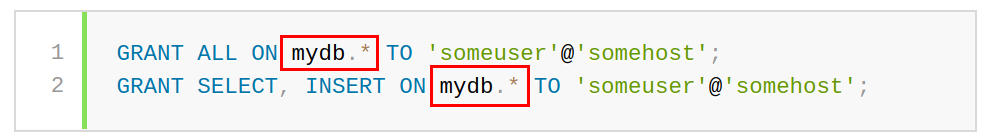
3) Table Privileges:
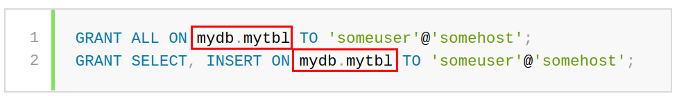
账户和密码:
A user value in a GRANT statement indicates a MySQL account to which the statement applies. To accommodate granting rights to users from arbitrary hosts, MySQL supports specifying the user value in the form ‘user_name’@’host_name’.
You can specify 通配符 in the host name. For example, 'user_name'@'%.example.com' applies to user_name for 任何 host in the example.com domain, and 'user_name'@'192.168.1.%' applies to user_name for any host in the 192.168.1 class C subnet.
The simple form ‘user_name’ is a synonym 同义词 for ‘user_name’@’%’.
删除用户:
1 | DROP USER [IF EXISTS] user [, user] ... |
查看已有用户:
1 | USE mysql |
地址绑定:
1 | --bind-address=addr |
The server treats different types of addresses as follows:
0.0.0.0, the server accepts TCP/IP connections on 所有 server host IPv4 interfaces.::, the server accepts TCP/IP connections on all 所有 host IPv4 and IPv6 interfaces. Use this address to permit both IPv4 and IPv6 connections on all server interfaces.::ffff:127.0.0.1, clients can connect using –host=127.0.0.1 or –host=::ffff:127.0.0.1.数据库远程连接不上，多半是 bind-address 和 root 问题搞得鬼:
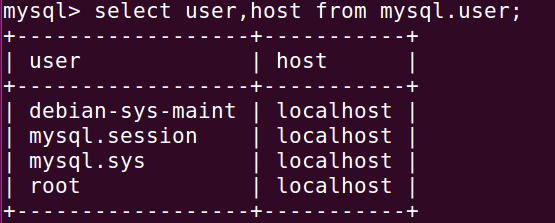
这个时候，需要执行语句给 ROOT 赋上权限即可:
1 | mysql> update mysql.user set host = '%' where user = 'root'; |
1) 从库从主库克隆已有数据:
主库 (锁表 -> 查询从库复制开始位置 -> 备份 -> 解锁):
1 | FLUSH TABLES WITH READ LOCK; |
从主库机器上拷贝 all.sql 到从库:
1 | rsync all.sql zk@10.108.113.85:~/Desktop/ |
从库恢复数据:
1 | mysql> source /home/zk/Desktop/all.sql |
2) 执行同步:
主库查看一下从库复制的起始位置:
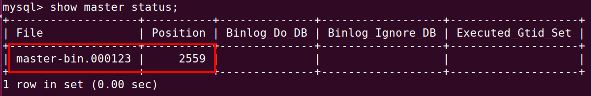
从库执行如下命令 (下面语句必须在 SLAVE 机器上的拥有 SUPER 权限的用户来执行):
1 | STOP SLAVE IO_THREAD FOR CHANNEL ''; |
遇见的问题:
1 | mysql> change master to master_host = '10.108.123.112', master_password = '123456', master_user = 'slave_user', master_log_file = 'master-bin.000123', master_log_pos = 1995; |
可以参考: How To Set Up Master Slave Replication in MySQL
显示 MASTER 和 SLAVE 的状态可以使用如下命令，但是查询显示的结果可读性不好:
1 | SHOW MASTER STATUS; |
如果想要更好的可读性，可以在后面加上 \G 这两个字符，其实查询语句也可以通过加上这两个字符来获得更好的阅读效果:
1 | mysql> SHOW MASTER STATUS\G |
查看复制线程有没有问题:
1 | mysql> SHOW PROCESS LIST\G |
二进制仅包含可能改变数据库的语句，它包含若干个文件:
由于二进制日志是公共资源，所有线程都向它写入语句，所以避免两个线程同时更新二进制日志很重要。为此，在事件写二进制日志之前，二进制日志需要获得一个互斥锁 LOCK_log，然后在事件写完成够释放。
从 my.cnf 配置文件中可以找到 MySQL 数据存放的位置:
或者也可以像下面这样执行命令找到:
1 | mysql> SHOW VARIABLES LIKE 'datadir'; |
我们是没有权限进入这个数据文件夹的，即使使用 sudo 也不行:

但是我们可以使用 mysqlbinlog 这个工具来装载 binlog 文件:
1 | mysqlbinlog /var/lib/mysql/master-bin.000125 |
--short-form: 忽略关于二进制日志中的事件的注释信息--read-from-remote-server: 远程读取--host=master.example.com: 远程主机--user=repl_user: 账户--password: 密码双击修改某一个表的某一个字段之后，一定要记住点击右下角的 Apply:
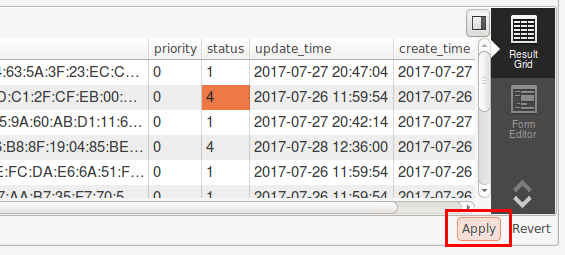
1 | mysql --defaults-file=/home/user/.my.cnf database |
1 | mysqld --port=3307\ |
mysqld: MySQL 服务器mysql: MySQL 客户端命令行程序1 | select name from table1 where name regexp binary '^CU[0-9]' |
The documentation for regexp is here. binary is required to 确保大小写匹配
百分号 % 字符来表示任意字符
1 | # 设置为 utf8 解决各种字符错误问题 |
1 | # sudo vi /etc/mysql/mysql.conf.d/mysqld.cnf |
1 | sudo /etc/init.d/mysql start |
1 | ERROR 2002 (HY000): Can't connect to local MySQL server through socket '/var/run/mysqld/mysqld.sock' (2) |
查看 MySQL 错误日志：
1 | 2017-11-21T12:08:01.649118Z 31311 [Note] Aborted connection 31311 to db: 'sogo' user: 'sogo' host: 'localhost' (Got an error reading communication packets) |
暂时不知道为什么会死去…
Try this:
1 | mysql -h 127.0.0.1 -P 3306 -u root -p <database> |
Also (to see if it’s running):
1 | telnet 127.0.0.1 3306 |
1 | ALTER TABLE `my_db` CHANGE COLUMN `column_a` `column_a` VARCHAR(225) NULL DEFAULT NULL COMMENT 'enlarge column capacity' ; |
从 MySQL Workbench 客户端中查看的值是 0000-00-00 00:00:00，说明 create_time 为 TIMESTAMP 时间戳类型中已经插入了错误的值，需要采用如下方式来恢复一下:
1 | update `my_db` set `create_time` = NULL where `create_time` = 0; |
不能采用:
1 | update `my_db` set `create_time` = NULL where `create_time` = '0000-00-00 00:00:00'; |
来更新，不管用。
MySQL Workbench: You are using safe update mode and you tried to update a table without a WHERE that uses a KEY column To disable safe mode, toggle the option ….
1 | SET SQL_SAFE_UPDATES = 0; |
1 | mysql> using databasename; |
1 | mysqldump -h [remoteip] --port = 3306 -u [username] -p [password] --databases [db_name] --tables [tablename] > tablename.sql; |
更多示例:
1 | mysqldump --all-databases > dump.sql |
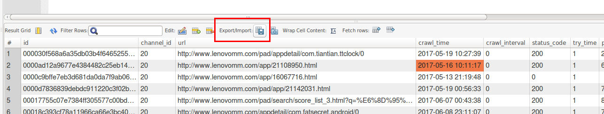
在保存的格式中选择 SQL INSERT statements:
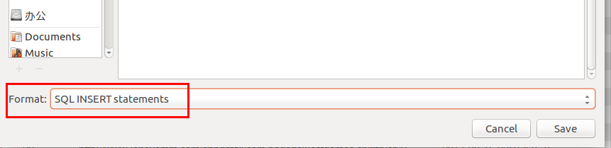
1 | mysql> select * INTO OUTFILE 'aaa.sql'; |
最后发现需要这样执行才算可以:
1 | mysql -uroot -proot iapp_db -e 'select * FROM iapp_app_info' > aaa.txt |
默认导出的数据文件是以 TAB 进行列分割的，如果想要使用其他分隔符，可以像下面这样:
1 | ``` |
1 | sudo apt install cmake |
1 | mysql> status |
性能剖析 是测量和分析时间花费在哪里的主要方法。一般包含两个步骤: 测量任务所花费的时间；然后对结果进行统计和排序，将重要的任务排到前面。
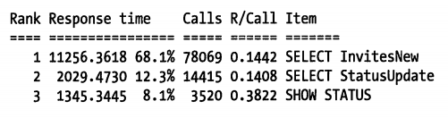
第一，一些只占总响应时间比重很小的查询是不值得优化的。根据阿姆达尔定律，对一个占总响应时间不超过 5% 的查询进行优化，无论如何努力，收益也不会超过 5%。第二，如果花费了 1000 美元去优化一个任务，但业务的收入没有任何增加，那么可以说反而导致业务被逆优化了 1000 美元。如果优化的成本大于收益，就应当停止优化。
强烈建议大家从现在起就利用慢查询日志捕获服务器上的所有查询，并且进行分析。可以在一些典型的时间窗口如业务高峰期的一个小时内记录查询。如果业务趋势比较均衡，那么一分钟甚至更短的时间内捕获需要优化的低效查询也是可行的。
不要直接打开整个慢查询日志进行分析，这样做只会浪费时间和金钱。
我们建议诊断问题时先使用前两种方法: SHOW STATUS 和 SHOW PROCESSLIST。这两种方法的开销很低，而且可以通过简单的 Shell 脚本或者反复执行的查询来交互式地收集数据。
对索引列是按照顺序组织 (因此你可以使用 ORDER BY 和 GROUP BY) 存储的，所以很适合查找范围数据。索引中存储了实际的列值，所以某些查询只使用索引就能够完成全部查询。
对每一行的所有的索引列计算一个哈希码
多维度索引数据，一般用作地理数据存储
更类似于搜索引擎干的事情
索引很长的字符列，这会让索引变得大且慢，通常可以索引开始的部分字符，这样可以大大节约索引空间，从而提高索引效率。
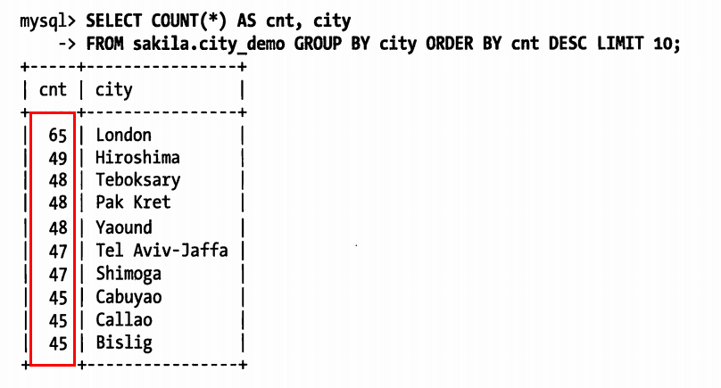
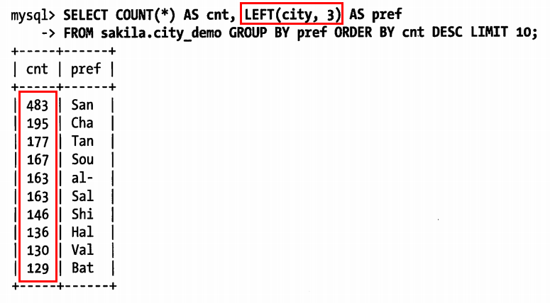
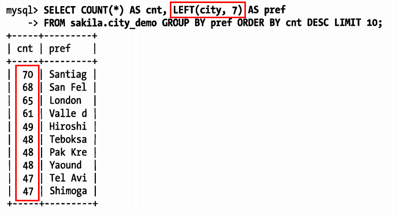
计算合适的前缀长度的另外一个办法就是计算完整列的选择性，并使前缀的选择性接近于完整列的索引:
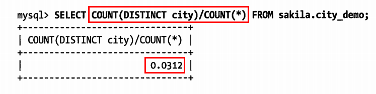
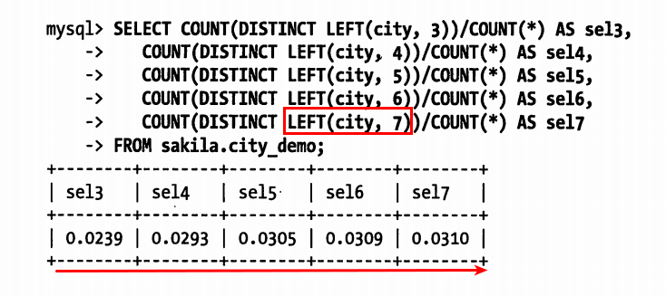
如何创建前缀索引:
MySQL 无法使用前缀索引做 ORDER BY 和 GROUP BY
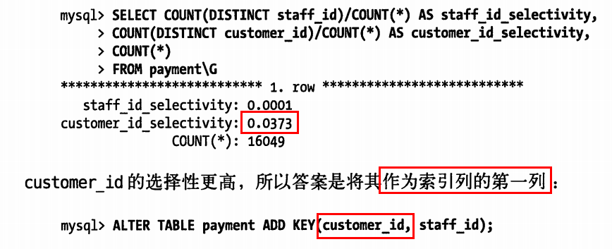
通常情况下最好指定列为 NOT NULL，除非真的需要存储 NULL 值
DATETIME 和 TIMESTAMP 列都可以存储相同类型的数据: 时间和日期，精确到秒，然而 TIMESTAMP 只使用 DATETIME 一半的存储空间，并且会根据时区变化，具有特殊的自动更新能力。
如果存储整数，可以使用这几种整数类型: TINYINT, SMALLINT, MEDIUMINT, INT, BIGINT，分别使用 8, 16, 24, 32, 64 位存储空间。MySQL 可以为整数类型指定宽度，例如 INT(11)，对大多数应用这是没有意义的: 它不会限制值的合法范围，只是规定了 MySQL 的一些交互工具用来显示字符的个数。对于存储和计算来说，INT(1) 和 INT(20) 是相同的。
CHAR 适合存储很短的字符串，或者所有值都接近同一个长度。例如，CHAR 非常适合存储密码的 MD5 值，因为这是一个定长的值。对于经常变更的数据，CHAR 也比 VARCHAR 更好，因为定长的 CHAR 类型不容易产生碎片。对于非常短的列，CHAR 比 VARCHAR 在存储空间上也更有效率。例如用 CHAR(1) 来存储只有 Y 和 N 的值。
为标识符 (identifier column) 选择合适的数据类型非常重要。如果可能，应该避免使用字符串类型作为标识符，因为它们很消耗空间，并且通常比数字类型慢。对于完全“随机”的字符串也需要多加注意，例如 MD5()，SHA1()，UUID() 产生的字符串。这些函数生成的新值会任意分布在很大的空间内，这回导致 INSERT 以及一些 SELECT 语句变得很慢:
INSERT 语句更慢。SELECT 语句会变得更慢，因为逻辑上相邻的行会分布在磁盘和内存的不同地方。如果存储 UUID 值，则应该移除“-”符号；或者更好的做法是，用 UNHEX() 函数转换 UUID 值为 16 字节的数字，并且存储在一个 BINARY(16) 的列中。检索时可以通过 HEX() 函数来格式化为十六进制格式。
UUID() 生成的值与加密散列函数例如 SHA1() 生成的值有不同的特征: UUID 值虽然分布也不均匀，但还是有一定顺序的。尽管如此，但还是不如递增的整数好用。
1 | create table users(id_bin binary(16), name varchar(200)); |
人们经常使用 VARCHAR(15) 列来存储 IP 地址，然而，它们实际上是 32 位无符号整数，不是字符串。用小数点将地址分成四段的表示方法只是为了让人们阅读容易。所以应该用无符号整数存储 IP 地址。MySQL 提供了 INET_ATON() 和 INET_NTOA() 函数在这两种表示方法之间转换。
SHOW 和 SET 是仅有的两个可以用于监控 MySQL 服务器的工具
1) 冷备份:
对于 InnoDB 的存储引擎的冷备份非常简单，只需要备份:
frm 文件my.cnf两个都是 DELETE
1 | com.mysql.jdbc.Driver |
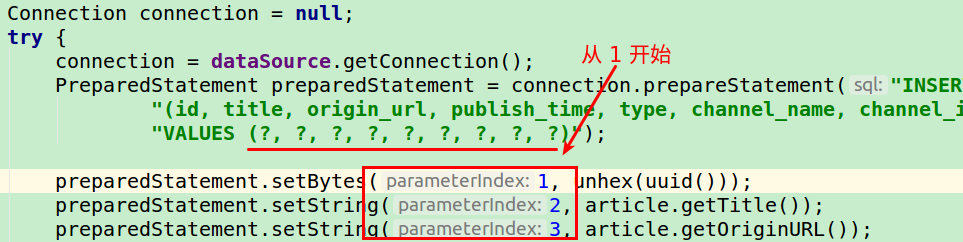
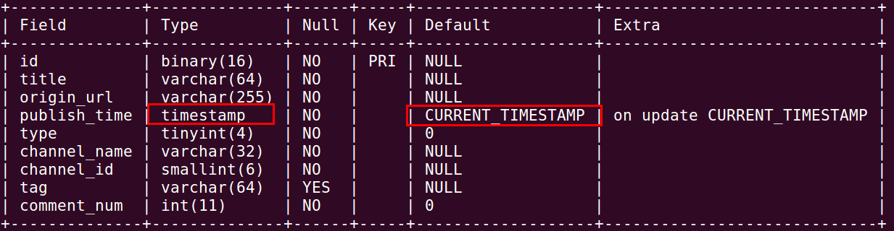
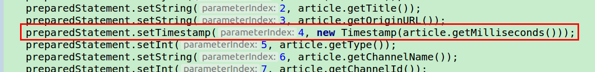
AUTO_INCREMENT 一直自增，即使把数据库表清空，再次插入数据，依然是从上次清空前的 id 开始的。
插入数据库乱码问题:
1 | con = DriverManager.getConnection("jdbc:mysql:///dbname", "user", "pass"); |
改为:
1 | con = DriverManager.getConnection("jdbc:mysql:///dbname?useUnicode=true&characterEncoding=utf-8", "user", "pass"); |
1 | SELECT VID, thumb |
会抛出异常:
1 | Message: Error during SQL execution: SELECT VID, thumb FROM video WHERE VID IN ( SELECT VID FROM video WHERE title LIKE "%funny%" ORDER BY viewtime DESC LIMIT 5) ORDER BY RAND() LIMIT 1<br /> |
可以替换为 (Instead of using IN, you can use JOIN):
1 | SELECT v.VID, v.thumb |
Two things to check (assuming your machine is called my-machine, you can change this as appropriate):
That the /etc/hostname file contains just the name of the machine.
That /etc/hosts has an entry for localhost. It should have something like:
1 | 127.0.0.1 localhost.localdomain localhost |
SQL 聚合(1) RIGHT JOIN:

1 | SELECT column_name(s) |
1 | mysql> select webpage_channel.channel_id, count(*) from webpage right join webpage_channel on webpage.channel_id = webpage_channel.channel_id group by webpage_channel.channel_id; |
(2) LIKE:
%: The percent sign represents zero, one, or multiple characters_: The underscore represents a single character(3) GROUP BY:
The GROUP BY statement is often used with 聚合函数 (COUNT, MAX, MIN, SUM, AVG) to group the result-set by one or more columns.
(4) HAVING:
The HAVING clause was added to SQL because the WHERE keyword could not be used with 聚合函数.
1 | SELECT COUNT(CustomerID), Country |
openSession 阻塞将 DB 的用户名和密码配置错误了
INNER JOIN 示例1 | -- 查询字段 |
MySQL 时区问题系统时间是准确的，但是在 MySQL 内查询的时间比系统时间慢 8 个小时:
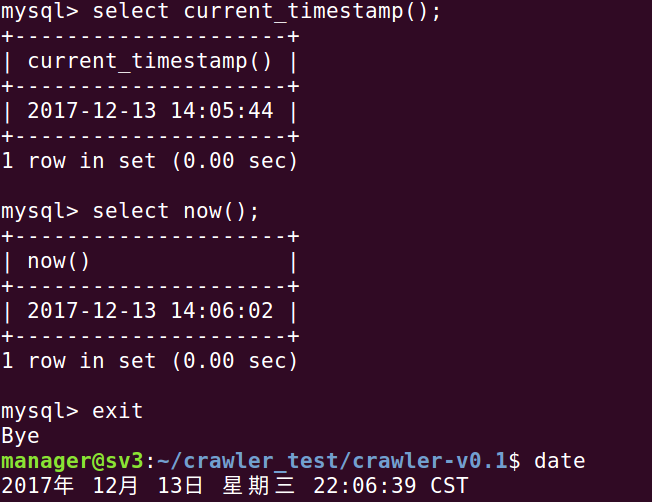
MySQL 使用的也是系统时间:
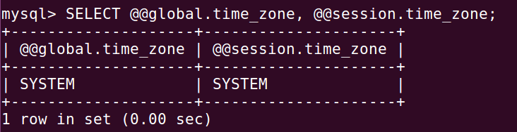
默认插入的时间戳也是不正确的，慢了 8 个小时。
最终定位，MySQL 是装在 Docker 里面的，可能 Docker 的时区设置有问题。